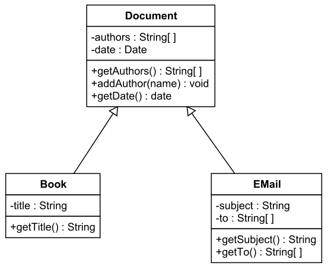

Grupo 1
UML não é desenho. É especificação.
Uma linguagem padrão para representar classes, objetos, responsabilidades e relações sem depender de interpretação informal.
Classe
Associação
Multiplicidade
Agregação
Composição

Definição
UML é linguagem, não processo.
- É uma linguagem de modelagem padrão, mantida pelo OMG.
- Serve para especificar, visualizar, construir e documentar artefatos de software.
- Não define como a equipe trabalha; define como o sistema é representado.
Linguagem
Vocabulário visual compartilhado.
Processo
Sequência de trabalho da equipe.
A falha comum
Tratar UML como metodologia. Ela não manda fazer cascata, Scrum ou protótipo; ela padroniza a representação técnica.
Foco da apresentação
O diagrama de classes mostra a estrutura estática.
- Classes representam conceitos relevantes do domínio.
- Atributos descrevem dados mantidos por cada objeto.
- Operações descrevem comportamentos oferecidos pela classe.
- Relacionamentos mostram como os objetos se conectam.
Classe
Pedido
- código: String
- data: Date
- total: Decimal
+ calcularTotal(): Decimal
+ confirmar(): void
+ público
- privado
# protegido
Vocabulário estrutural
Relacionamento não é enfeite: é contrato entre classes.
O tipo da linha informa dependência, conhecimento, especialização ou implementação.
Associação simples
Associação indica que uma classe conhece outra.
- É uma conexão estrutural entre objetos.
- Não indica posse forte nem destruição automática.
- Com multiplicidade, a linha deixa de ser vaga e passa a comunicar quantidade.
Professor
0..*
orienta
0..*
Aluno
Sem multiplicidade?
A equipe não sabe se um professor orienta um aluno, muitos alunos ou nenhum aluno.
Precisão do modelo
Multiplicidade responde: quantos objetos podem participar?
Uma associação sem multiplicidade é uma informação incompleta. O código pode acabar aceitando estados que o domínio não permite.
Direção do conhecimento
Navegabilidade vira referência no código.
- Seta em uma ponta: apenas uma classe conhece a outra.
- Sem seta explícita: a leitura pode ser bidirecional ou indefinida, dependendo da convenção.
- Em POO, isso afeta atributos, acoplamento e dependências entre módulos.
Pedido
Cliente
class Order {
constructor(customer) {
this.customer = customer;
}
}
Todo-Parte fraco
Agregação preserva o ciclo de vida da parte.
- O todo agrupa partes, mas não é dono absoluto delas.
- A parte pode existir antes, durante e depois do todo.
- Use quando a relação representa pertencimento fraco ou compartilhado.
Departamento
1
0..*
Professor
Departamento excluído
Professor continua existindo no sistema.
Todo-Parte forte
Composição amarra o ciclo de vida da parte.
- O todo possui as partes de forma estrita.
- A parte não faz sentido fora do todo.
- Se o todo é destruído, as partes também deixam de existir.
Casa
1
1..*
Cômodo
Casa excluída
Cômodos também são removidos.
Diferença geral
Associação, agregação e composição não têm o mesmo peso.
Característica
Associação
Agregação
Composição
Natureza
Conexão simples
Todo-Parte fraco
Todo-Parte restrito
Ciclo de vida
Independente
Independente
Parte depende do todo
Exemplo
Professor e Aluno
Empresa e Unidade
Arquivo e Página
Acoplamento
Baixo
Médio
Alto
Da UML para a POO
A escolha do símbolo muda o código.
- Agregação costuma receber objetos já existentes.
- Composição costuma criar, controlar e remover suas partes.
- O desenho informa quem gerencia memória, persistência e exclusão.
class House {
constructor() {
this.rooms = [new Room("Sala"), new Room("Quarto")];
}
remove() {
this.rooms = [];
}
}
class Department {
constructor(professors) {
this.professors = professors;
}
}
Análise crítica
Três erros deixam o modelo superficial.
O rigor aparece quando o grupo justifica por que uma linha é associação, agregação ou composição.
Fechamento do Grupo 1
O objetivo é modelar decisões, não decorar símbolos.
Exemplo para a turma
Se um departamento acaba, o professor continua. Se uma casa deixa de existir no sistema, seus cômodos também deixam. Essa diferença de ciclo de vida é o coração da distinção entre agregação e composição.